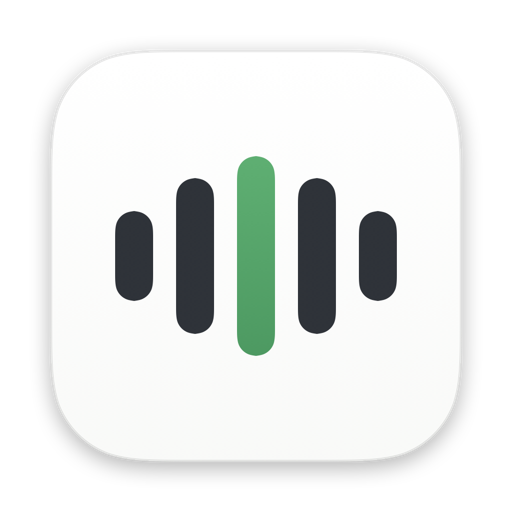

A DC Labs product · Free & open source · macOS
Speak. It types.
Nothing leaves your Mac.
Hold a key, say what you mean, let go. Cadence turns your voice into text in whatever app you're using, transcribed entirely on your Mac. Works offline, in two languages, for free.
How it works
- Right ⌥
Hold
Hold Right Option in any app. A small pill appears while you speak.
Speak
A quick draft shows as you talk. A second, more careful pass makes the final text.
Release
Let go and the text lands where your cursor is. Ctrl⌥⌘Z takes it back.
Features
Everything you need, nothing that phones home.
On your Mac, start to finish
Speech becomes text on your Mac's own chip, using OpenAI's open Whisper model. No server and no account, and it makes no network connections while idle. Turn off Wi-Fi and it still works.
Two languages, two keys
Right Option for one language, Left Option for the other. Switching costs a finger, not a menu, and no time spent guessing the language.
Your words, spelled right
A personal dictionary teaches it the names and terms you use most.
History, encrypted
Past dictations are kept in an encrypted database on your Mac, searchable, with copy and re-insert. Saving audio is off unless you turn it on.
See the time you save
A dashboard with time saved, words, speaking pace, your streak and where you dictate most.
Honest about every insert
Cadence checks that your text actually landed and never claims success when it didn't.
Compare
How Cadence compares
The facts that matter most, as of October 2026, from each product's own site. Prices change, so check the linked pages.
| Feature | Cadence | Wispr Flow | Superwhisper | Apple Dictation |
|---|---|---|---|---|
| Where your speech becomes text | On your Mac, always | In the cloud, always | On your Mac or in the cloud, by model | On your Mac for many languages |
| Works offline | Yes | No | Yes, with local models | Yes, for many languages |
| Price | Free | Free up to 2,000 words a week, then $12–15 a month | Free tier; Pro is paid | Free, built in |
| Open source | Yes, MIT | No | No | No |
| Platforms | Mac (Apple silicon) | Mac, Windows, iOS, Android | Mac, Windows, iOS, Android | Apple devices |
Where they win: Wispr Flow and Superwhisper run on far more devices and offer AI editing and cloud features that Cadence doesn't have. Apple Dictation needs nothing installed. Choose Cadence if you want your voice to stay on your Mac. Sources: Wispr Flow pricing and privacy, Superwhisper, Apple Dictation.
Download
Get Cadence

Download Cadence.dmgApple silicon Mac · macOS 14 Sonoma or later · about 500 MB, because the speech model comes with it
Or with Homebrew:
brew tap danieljcuesta007/cadence https://github.com/danieljcuesta007/cadence
brew install --cask cadenceWhy macOS asks you to confirm
Apple only skips that warning for apps from developers who pay $99 a year for its Developer Program. Cadence is free, and staying free meant not passing that cost on to you. So it isn't notarized by Apple, and macOS will ask you to confirm once, the first time you open it. That was a deliberate choice, not an oversight.
Open it the first time
- Drag Cadence to Applications and open it. macOS says it can't verify the app. Click Done.
- Open System Settings › Privacy & Security and scroll to Security.
- Next to "Cadence was blocked", click Open Anyway, then confirm.
After that it opens normally. Cadence then asks for two permissions: Microphone to hear you and Accessibility to type into other apps.
Check it's the real file
Every release publishes its SHA-256 checksum. In Terminal, run shasum -a 256 ~/Downloads/Cadence.dmg and compare the result with:
UNRELEASEDYou can also read every line of the source on GitHub, or build it yourself from there.
About the creator
Built by Daniel Cuesta, with Claude.
Daniel is a student founder who runs a lot at once: Addisuna Coffee, a coffee company where every bag funds a student's learning in Ethiopia, and Wednesdays of Wisdom, a weekly letter. He talks faster than he types, in English and Spanish, and wanted dictation that kept his words on his own machine. So he built it. Cadence is a DC Labs product, the label for the tools he makes.
Questions
Fair questions
Is it really free?
Yes. Cadence is open source under the MIT license, with no account, trial or word limit.
Does anything I say leave my Mac?
No. Transcription runs on your Mac, and Cadence makes no network connections while idle. History is encrypted on your disk, and audio is only kept if you turn that on.
Which languages?
Any language the bundled Whisper model handles, two at a time: one per Option key, or set either key to detect the language automatically. English and Spanish are tested the most.
Why does macOS warn me when I first open it?
It isn't notarized, because that costs $99 a year and Cadence is free. Here's how to open it, and how to check the file is genuine.
Intel Mac? Windows? iPhone?
Not yet. Cadence is built for Apple silicon Macs. Intel is untested, and Windows is planned.
Is it affiliated with Wispr Flow, Superwhisper, Apple or OpenAI?
No. They're named only to compare and to credit. Cadence is an independent project.